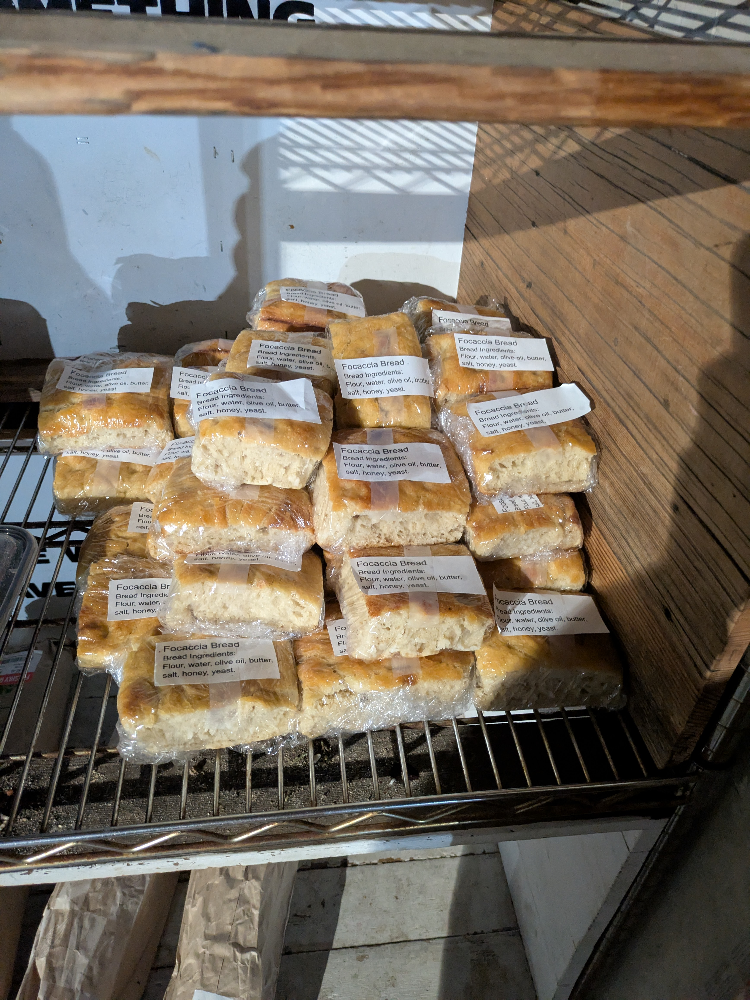

At Community Baking, friends and neighbors gather to bake focaccia bread for people who are hungry.
The Fall season of Community Baking is underway, and we are baking every Saturday afternoon through the end of November. The start time varies week to week, so please check the schedule here: Schedule
This season we will be making a community dinner after baking bread. Dinner will be a buffet with pasta station, fresh fruit station, and garden salad station. Please bring any ingredients you would like!
Home | Schedule | Every One is Welcome | What We'll Do | Where the Bread Goes | Location and Parking | What to Bring | Donation Wishlist